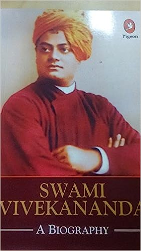

In the autobiography, Kalam examines his early life, effort, hardship, fortitude, luck and chance that eventually led him to lead Indian space research, nuclear and missile programs. Kalam started his career, after graduating from Aerospace engineering at Madras Institute of Technology, at Hindustan Aeronautics Limited and was assigned to build a hovercraft prototype. Later he moved to ISRO and helped establish the Vikram Sarabhai Space Centre and pioneered the first space launch-vehicle program. During the 1990s and early 2000, Kalam moved to the DRDO to lead the Indian nuclear weapons program, with particular successes in thermonuclear weapons development culminating in the operation Smiling Buddha and an ICBM Agni.

Swami Vivekananda's inspiring personality was well known both in India and in
America during the last decade of the nineteenth century and the first decade of the
twentieth. The unknown monk of India suddenly leapt into fame at the Parliament of
Religions held in Chicago in 1893, at which he represented Hinduism. His vast
knowledge of Eastern and Western culture as well as his deep spiritual insight, fervid
eloquence, brilliant conversation, broad human sympathy, colourful personality, and
handsome figure made an irresistible appeal to the many types of Americans who came
in contact with him. People who saw or heard Vivekananda even once still cherish his
memory after a lapse of more than half a century.